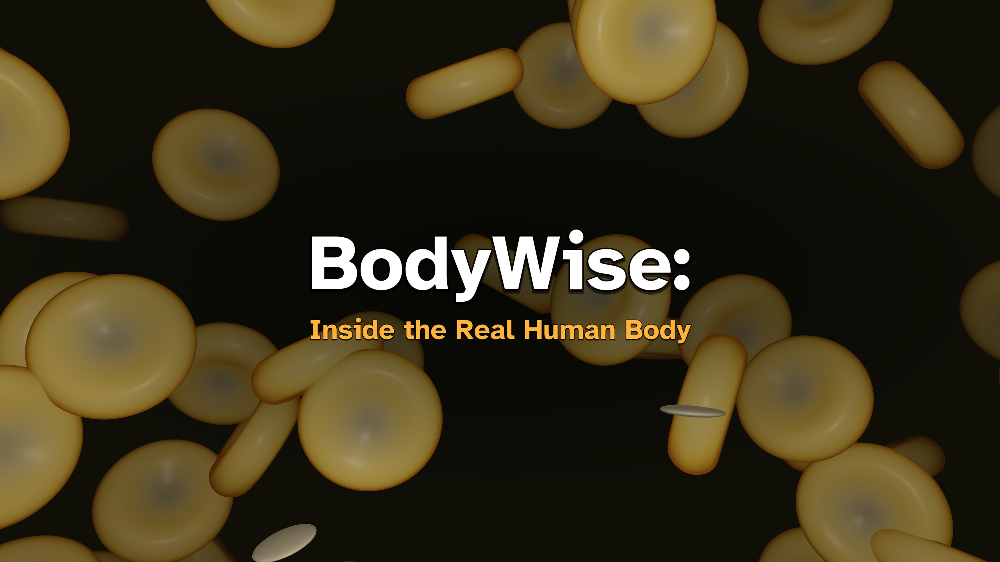
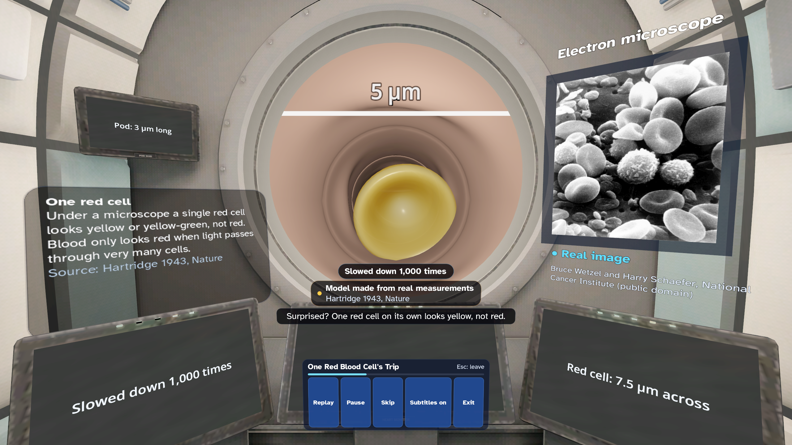
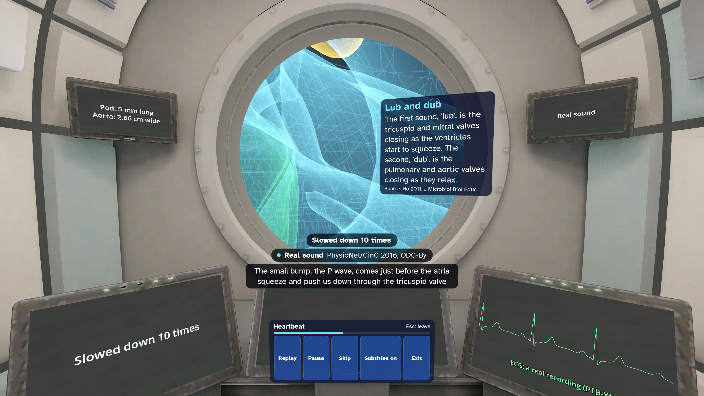
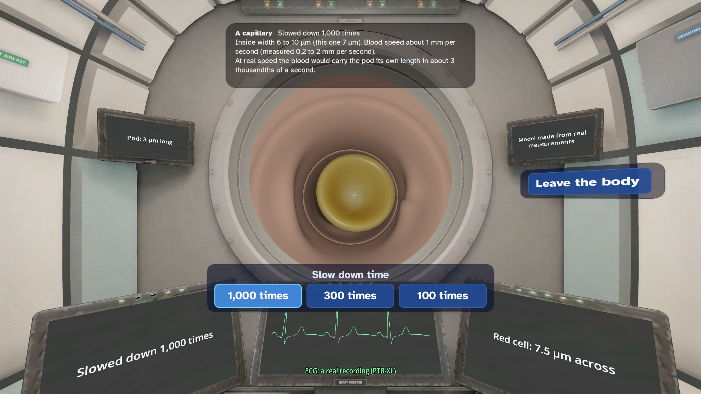

BodyWise: Inside the Real Human Body

Ride a tiny imaginary pod through the real human body. Drift past red blood cells at their real size, watch a heart valve shut and see how we hear. 14 narrated journeys, each with a short challenge, at four reading depths from Quick Look to Expert. The dashboard always tells you when time is slowed down or sped up. Every fact names its source. For ages 10 and up. No ads, no chat, no accounts, no in-app purchases and no personal data collected.
Get BodyWise on the Meta Horizon Store
At a glance
| Fact | Detail |
|---|---|
| Price | USD 3.99 in the US store. The store shows the price for your country. |
| Headset | Meta Quest 3 |
| Ages | For ages 10 and up. |
| Where it is sold | The Meta Horizon Store |
| Internet | Not required to use the app |
| Mixed reality | No. The app is fully virtual. |
| Controls | Meta Quest Touch controllers |
| Players | Single player |
| Comfort | Moderate |
| Language | English (UK) |
| Ads, chat and in-app purchases | None. The app collects no personal data. |
| Developer | dav3studios |
Real sizes, real speeds
You imagine that a pod has shrunk you. Only the pod is imaginary. A red blood cell is about 7.5 micrometres across, and on its own it looks yellow, not red. Blood moves at its real speed, and a label always says when time is slowed down or sped up. Another label says what you see: a real image, a model made from real measurements or a science-based picture.
14 journeys
The heartbeat, a red cell's trip, breathing, the gut, nerves, immunity, sight, hearing, bones and muscles, the kidney, a cut that heals, inside a cell, keeping healthy and growing up. Each takes up to about 8 minutes and ends with a check question and a challenge, like Valve Timer.
Explore
Steer the pod through a capillary bed, slowed down 100 to 1,000 times, or visit the chambers of a heart.
Real data
The heart is made from real scan data. Hear a real heart sound recording and see one real heartbeat on the ECG. Real micrographs and protein structures too.
Read at your level
Four reading depths, from Quick Look to Expert. A computer-generated British voice narrates, with subtitles. Every fact names its source.
For families
Up to six explorers, pictures only, no names. Break reminders. A grown-up can hide Growing Up. An adult should supervise children's play. BodyWise teaches how the body works. It does not give medical advice. No ads, no chat, no accounts, no in-app purchases and no personal data collected. Plays offline. Credits are on our credits page.
Features
- 14 narrated journeys through the real human body, each with a challenge
- Red blood cells and platelets at their real size, made from published measurements
- A time label that always says when time is slowed down or sped up
- Four reading depths, from Quick Look to Expert
- A computer-generated British voice, with subtitles
- Every fact names its source
- Explore a capillary bed and the chambers of a heart
- Up to six explorers, pictures only, no names
- No ads, no chat, no accounts, no in-app purchases and no personal data collected
Pictures



More from dav3studios
- SpaceWise: The real solar system at its true size and in true time, with eight narrated journeys.
- BeakerWise: 104 science experiments in biology, chemistry and physics on a virtual lab bench.
- EpochWise: 45 moments of history on the real land, under the sky computed for that date.
- GambitWise: Learn chess and Go one small step at a time, with a spoken coach. Free.
On this site
- Help and support
- Privacy policy
- Terms of use
- Credits: the people and works that the app uses, with their licences
BodyWise is made by dav3studios for Meta Quest. Get it on the Meta Horizon Store.